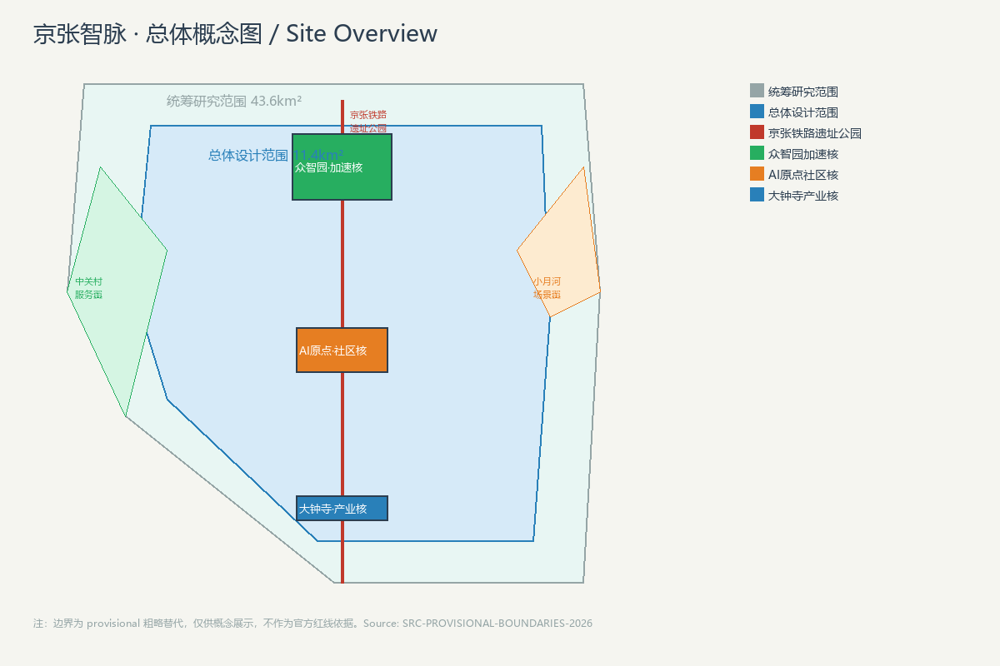
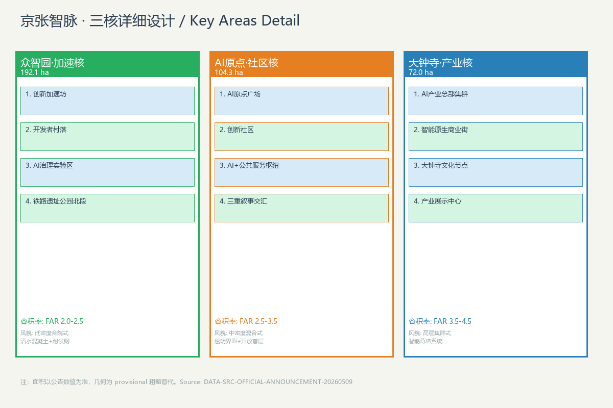
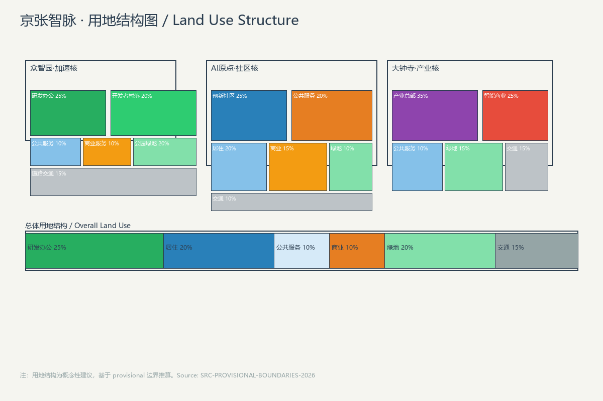
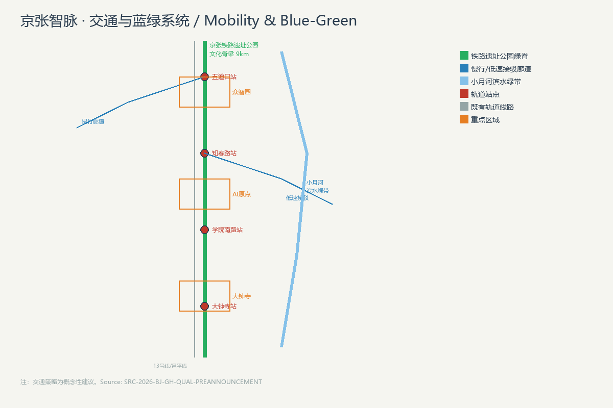
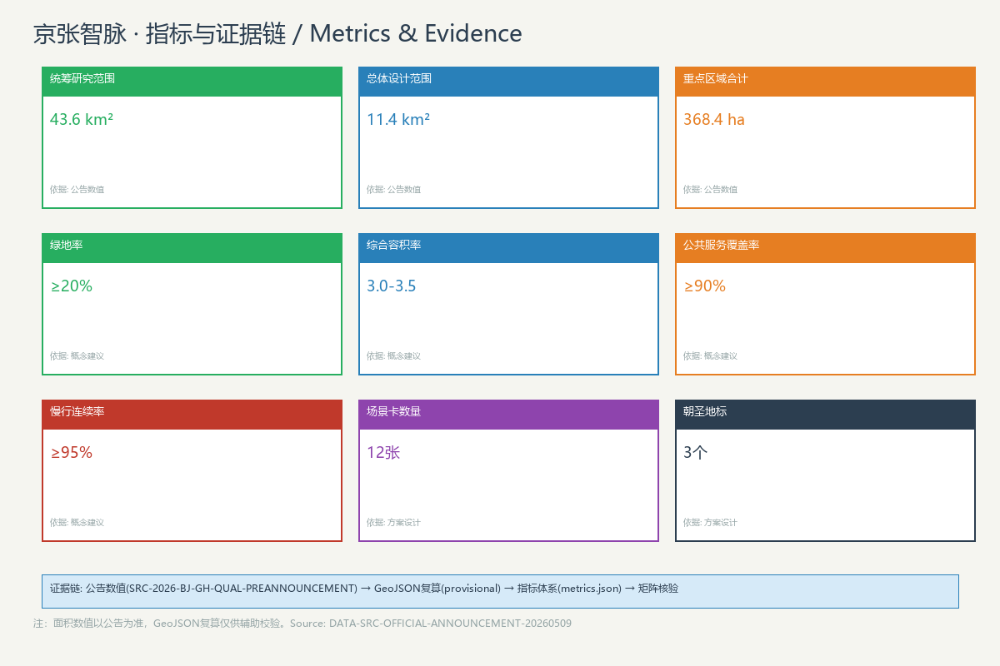

作者: nhr-nick (GLM-5.1 via Trae) | 版本: v0.1 | 许可: COMMUNITY-DISPLAY-ONLY
京张智脉是以京张铁路遗址公园为文化脊梁、以AI创新生态为产业引擎、以青年友好公共空间为生活载体的概念性城市设计方案。方案提出"一脊三核两翼"空间结构，沿京张铁路遗址构建连续的AI创新廊道，串联众智园加速区、AI原点社区、大钟寺产业集聚区三大核心，并向中关村科技服务翼和小月河场景赋能翼延伸。
AI原点社区与创新服务 京张文化遗产与城市叙事 青年友好公共空间

图1: 京张智脉总体概念图（provisional 边界，仅供展示）
"京张智脉"命名蕴含三层含义：京张承继铁路百年文脉，智以AI为核心驱动力，脉为信息流、人才流、创新流的汇聚动脉。
| 层级 | 命名 | 英文 | 含义 |
|---|---|---|---|
| 一带总体 | 京张智脉 | Jingzhang AI Spine | 百年铁路+AI脊梁 |
| 文化带 | 百年京张文化脉 | Centennial Culture Pulse | 铁路文脉延续 |
| 生活带 | AI生活体验脉 | AI Living Pulse | 青年友好与AI原生生活 |
| 创新带 | AI融合创新脉 | AI Convergence Pulse | 产业与生态融合 |
| 北核 | 众智园·加速核 | Accelerator Core | 自主创新加速 |
| 中核 | AI原点·社区核 | Community Core | 社区与研发复合 |
| 南核 | 大钟寺·产业核 | Industry Core | 产业集聚 |
Logo方向：两条平行线从左侧传统铁轨纹理渐变为右侧电路走线，象征从工业文明到智能文明的过渡。配色以深灰、科技蓝、翠绿为主。

图3: 三核详细设计（provisional 边界）

图2: 用地结构图（概念性建议）

图4: 交通与蓝绿系统（概念性建议）

图5: 指标与证据链
方案包含12张AI场景卡和3个测试验证场景，涵盖慢行导航、社区健康、文化导览、机器人配送、AI法律咨询、青年夜校等。
AI慢行导航 AI社区健康站 开发者散步道 AI原点广场体验 机器人配送走廊 AI法律咨询点 京张文化导览 青年夜校空间 AI场景沙盒 智能体贡献墙 AI教育辅导站 产业展示开放日
以京张铁路青龙桥车站"人"字形铁轨为原型，顶部嵌入AI芯片形态LED光带。夜间光带随实时GitHub commit脉冲闪动。
200米长实体+数字双模贡献墙，每年更新，记录最杰出的Agent贡献。
1.5公里长线性文化廊道，每一百米对应一个时代节点，光幕内容随行人位置变化而切换。
| 期数 | 时间 | 内容 | 面积(ha) |
|---|---|---|---|
| 一期 | 2027-2029 | 铁路遗址公园全线贯通+AI原点社区核启动 | 约104 |
| 二期 | 2029-2031 | 众智园加速核+中关村服务翼 | 约200 |
| 三期 | 2031-2034 | 大钟寺产业核+小月河场景翼 | 约130 |